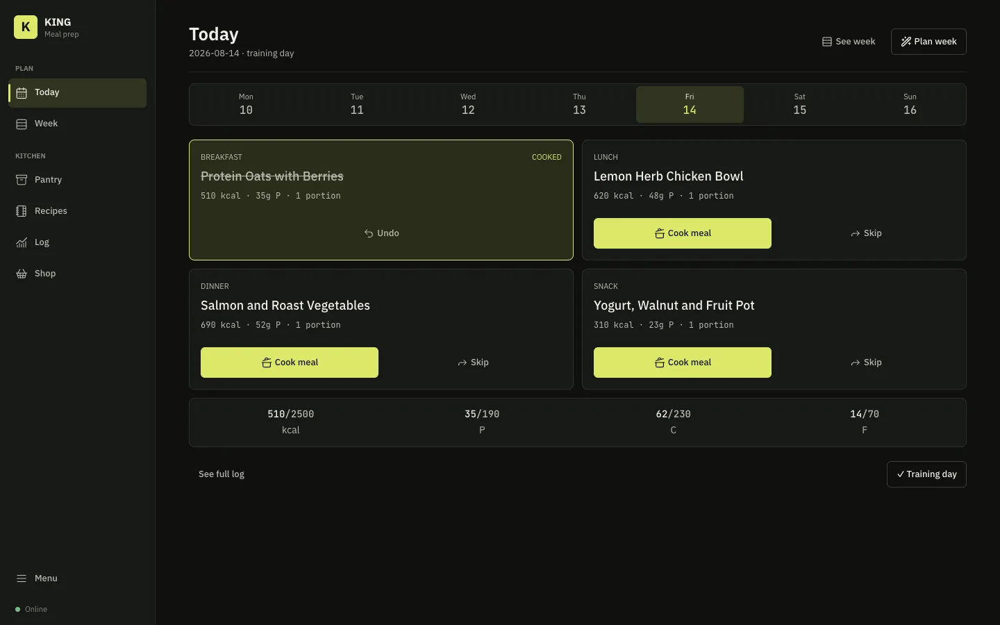

King of Meal Prep
Designed and built a private kitchen operations platform that connects weekly planning, recipes, pantry stock, prepared portions, shopping, nutrition, guided cooking, barcode and receipt review, feedback, and recovery.
- Models cooking and inventory as idempotent transactions with compensating undo movements and tested schema migrations.
- Preserves missing nutrition, source, confidence, and review state instead of presenting uncertain data as fact.
- Runs locally through Docker with authentication, portable exports, encrypted backups, staged restore, and automated checks.
Python, Flask, SQLite, Docker, PWA, transactional data modelling